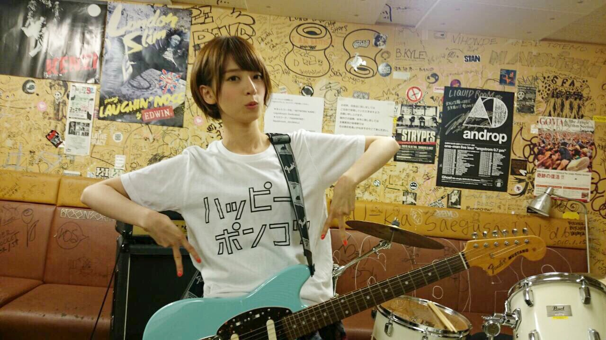

| 2015/07 17 Fri | 未確認フェスティバル応援ガ ールになりました！ |
今日のSCHOOL OF LOCK FRIDAY！
こんなに乃木坂の曲流れてるラジオ初めて聴いた、、、！！！
フルで２曲？かかってたよね？？( ﾟДﾟ )
合計何曲かかったんだ？？( ﾟДﾟ )
怒涛の乃木坂攻め！ねぇみんな聴いてた？？
聴かなきゃ損だったよほんとに！！！！( ﾟДﾟ )
あぁ、校長教頭SOLスタッフ様
本当にありがとうございます（ ｉ _ ｉ ）
貴重なフライデーの時間、ほぼほぼ乃木坂の話して頂いて曲かかって終わった、、、！！！
こんなにして頂いてとても嬉しいです（ ｉ _ ｉ ）（ ｉ _ ｉ ）
今日のSOLはわたしも急遽コメントを送ったのだ！
なんたって今日は、
未確認フェスティバル、初代応援ガール就任発表だったから！！！
わーーーー！！うれしい！とてもうれしいよーーー(((o(*ﾟ▽ﾟ*)o)))！
閃光ライオットが名前を改めて今年から始まる
未確認フェスティバル！！
閃光ライオットでは名だたる方々が務めてきた応援ガールに
運があったのか、まさかのわたしが応援ガールに、、、、！！！
閃光ライオットはわたしも学生時代から知っていて注目していたし、今や10代アーティストの登竜門的存在ですよね、、、
嘘のようです（ ｉ _ ｉ ）関われる日が来るとは思ってなかったからうれしい（ ｉ _ ｉ ）
もう、LIVEステージ出場アーティスト33組全部チェックしたよ！
めちゃくちゃおもしろくなりそう！たのしみ！！
みんなも聴いてみて！本当に10代？ってびっくりするようなアーティストばっかり！
未確認フェスティバル2015
今回応援ガールになるにあたって、
タワレコさんのNO MUSIC NO LIFE のポスターと
未確認フェスティバルのスペシャルコラボのポスターに
校長教頭とわたしが載ってしまったの、、、！！
なんて豪華なの、、、！！！！( Д ) ﾟ ﾟ
オフショット(((o(*ﾟ▽ﾟ*)o)))

教頭 わたし 校長！

顔違い笑
全国のタワレコにポスター貼ってあるから、是非観てねヾ(｡･ω･｡)
めちゃくちゃかっこよく撮ってもらっています(((o(*ﾟ▽ﾟ*)o)))
でも、8月30日の最終審査が
ご存知の通り わたし 神宮球場でライブ真っ最中なのです、、、
応援ガールなのにライブに駆けつけられない（ ｉ _ ｉ ）ごめんなさい（ ｉ _ ｉ ）
神宮からZeppにパワー送ります！！！
どうにか、わたしができることを全力でやって全力で未確認フェスティバル盛り上げていきますので、よろしくお願いします。・°°・(＞_＜)・°°・。
そして、先ほど発表になりましたが
来週Mステ出ます！太陽ノック！がんばる！！！
そして、キュウソネコカミさんMステ登場、、、！！！
めちゃくちゃ楽しみ！MEGA SHAKE IT！
もう踊れるぜ！笑
こっそり撮ったバージョン違い

笑
したっけね～♪
コメント(676)
2015/07/17 23:42